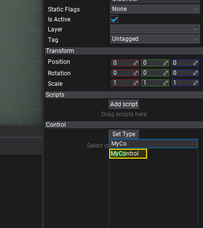
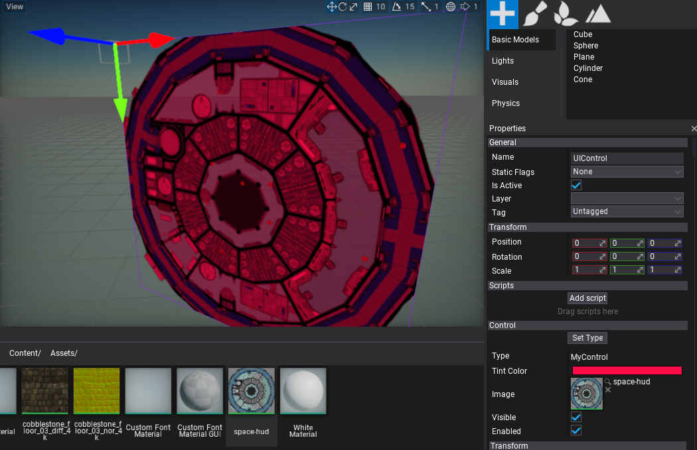

HOWTO: Create a custom control
In this tutorial, you will learn how to create a customized User Interface control for your game. Flax Engine uses UI scripted on a C# side so you can add your own controls and container controls as needed.
1. Create MyControl script
Add a new script named MyControl that will implement the control logic. The C# class needs to inherit from the Control type. To learn more about creating and using scripts see this tutorial.
2. Edit the script
Open the script file and write the following code:
using FlaxEngine;
using FlaxEngine.GUI;
namespace Game
{
public class MyControl : Control
{
[EditorOrder(0), Tooltip("The Tint color for the texture. Uses red as default.")]
public Color TintColor { get; set; } = Color.Red;
[EditorOrder(1), Tooltip("The texture to be drawn.")]
public Texture Image { get; set; }
/// <inheritdoc />
public override void Draw()
{
base.Draw();
Render2D.DrawTexture(Image, new Rectangle(Vector2.Zero, Size), TintColor);
}
}
}
As you can see it exposes a texture property and the tint color used for rendering. Use Render2D to perform custom rendering tasks. Also you can override all control events to provide any other custom logic for your UI. Feel free to experiment.
3. Spawning the UI Control
Now spawn a new UI Control to the scene and set its type to MyControl as shwon in a picture below. To learn more how to do so see the related tutorial here.

4. Test it out!
Finally, adjust the exposed properties of the control and see the final results.
